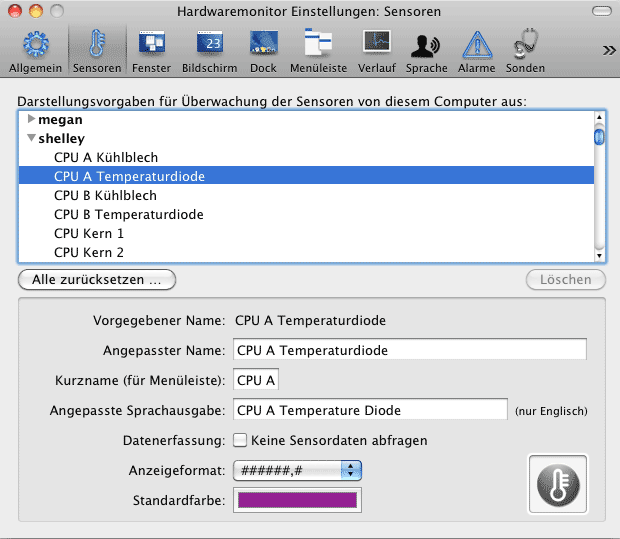

Sensordaten anzeigen |
Unter besonderen Umständen können die normalen Messwerte eines Sensors durch die Anzeige „---“ (drei Bindestriche) ersetzt werden. Dies hat die Bedeutung „kein Messwert verfügbar“. Eine solche Situation kann auftreten, wenn ein Sensor während des Starts des Programms erkannt wurde, im Moment aber aus irgendeinem Grund offline (getrennt) ist. Typische Situationen sind:
Falls technisch möglich, verbindet sich das Programm automatisch wieder mit diesem Sensor, sobald er verfügbar wird. Es ist kein Benutzereingriff erforderlich.
Zu jedem Sensor können Sie Basiseinstellungen machen, die grundsätzlich festlegen, wie die jeweiligen Messwerte dargestellt werden sollen. Wählen Sie hierzu im Hauptmenü den Menüpunkt Einstellungen… oder drücken Sie die Tastenkombination ⌘+,. Gehen Sie dann zur Rubrik Sensoren. Das Programm zeigt eine Übersicht von allen Sensoren, die von diesem Computer aus in der Vergangenheit überwacht wurden. Dies schließt sowohl alle Sensoren des lokalen Systems als auch die von fernen Computern mit ein. Die Liste wird automatisch nach Computernamen und Sensornamen sortiert.
Klicken Sie auf die Dreiecke links neben den Computernamen um die Sensorliste des gewählten Computers aufzuklappen. Nachdem einer der Sensoren ausgewählt wurde, werden dessen Einstellungen in der unteren Hälfte des Fensters sichtbar. Sie können jeweils folgende Vorgaben festlegen:
Wenn das Programm entdeckt, dass ein Sensor auf einem bestimmten Computer nicht mehr länger verfügbar ist, wird eine Warnung angezeigt, die auf diesen Zustand hinweist. Dies kann beispielsweise passieren, wenn Sie eine Grafikkarte oder eine Festplatte ersetzen, die mit Sensoren ausgestattet war. Um die Einstellungen für einen nicht mehr angeschlossenen Sensor endgültig zu entfernen, können Sie den Knopf Löschen in der Mitte des Fenster betätigen. Wenn Sie einen Computernamen auswählen, können Sie außerdem den vollständigen Einstellungssatz eines fernüberwachten Computers löschen solange das entsprechende System gerade nicht mit dem lokalen System verbunden ist.

Falls Sie mehr als 20 oder gar mehr als 100 Sensoren im Zugriff haben, kann es sehr lästig sein, bestimmte Vorgaben für sie einzustellen. Typische Fälle für das Ändern aller Sensoreinstellungen in einem einzigen Schritt können über zwei spezielle Funktionen erledigt werden:
Haben Sie bisher keine Farben vorgegeben, so stehen alle Anzeigefarben für sämtliche Sensoren auf schwarz. Durch Auswählen des Menüpunkts Monitor > Farben für alle Sensoren setzen werden alle momentan eingestellten Farben durch eine bunte Farbpalette ersetzt, die für die meisten Anwendungszwecke gute Ergebnisse liefert. Beachten Sie, dass hierdurch alle bisher eingestellten Farben für alle Sensoren, die vom aktuellen Computer aus überwacht werden, überschrieben werden.
Verschiedene Aspekte der Sensordarstellung können über den Menüpunkt Monitor > Einstellungen für alle Sensoren zurücksetzen … zurückgestellt werden. Nach Auswahl des Punktes können Sie bestimmen, welche Werte auf Werkseinstellung zurückgesetzt werden sollen:
Sie können auch den Knopf Alle zurücksetzen … auf der Karte Sensoren des Einstellungsfensters verwenden, um das Rückstellfenster aufzurufen.
Das Monitorprogramm ist in der Lage, Detaildaten über die verwendeten Sensoren anzuzeigen. Hierzu zählen folgende Daten:
Um diese Daten abzurufen, zeigen Sie zunächst die Sensorübersicht mit dem Menüpunkt Fenster > Übersicht einblenden oder der Tastenkombination ⌘+1 an. Klicken Sie dann eine Sensorzeile in der Tabelle an. Die entsprechenden Detailinformationen werden in einem zusätzlichen Fenster angezeigt.
Die Übersichtstabelle dient nur der schnellen Orientierung. Reihenfolge und Anzeigeformat in dieser Tabelle können nicht beeinflusst werden.
Um die aktuellen Messwerte der Sensoren in Fenstern anzeigen zu lassen, steht entweder ein Standardfenster oder eine durchsichtige Anzeige (oder beides) zur Verfügung. Um das Standardfenster zu öffnen, wählen Sie den Menüpunkt Fenster > Sensorfenster einblenden oder drücken Sie ⌘+2. Um es zu schließen, betätigen Sie den normalen Schließknopf des Fensters.
Die Vorgaben für das Standardfenster werden in der Rubrik Fenster der Einstellungsfunktion gesetzt. Die Anordnung der Messwerte kann zwischen horizontalem und vertikalen Layout variiert werden. Sie können für die Anzeige der Messwerte entweder die vorgegebenen Farben der Sensoren oder eine einstellbare einheitliche Farbe verwenden. Ebenso können Sie die Hintergrundfarbe des Fensters beliebig einstellen. Schriftart und Schriftgröße können durch Drücken der Schaltfläche Schriftart… angepasst werden. Beachten Sie, dass außer Art und Größe alle anderen Anpassungen einer Schriftart ignoriert werden. Mit den drei Knöpfen über dem Beispielfeld können Sie außerdem die Textausrichtung der Messwerte ändern. Der kleine Schieberegler Verhältnis Wert/Name legt fest, in welcher Größenproportion die Schrift für die Sensorbezeichnung im Verhältnis zum Sensorwert angezeigt werden soll. Im Normalfall sind die Namen 2,4-mal kleiner als der Messwert. Sie können einen anderen Wert zwischen 1,0 und 2,5 einstellen oder den Knopf Std betätigen, um zum Standardgrößenverhältnis zurückzukehren.
Welche Sensoren im Fenster anzuzeigen sind, kann über die Tabelle in der unteren Hälfte vorgegeben werden:
Alle Änderungen sind sofort wirksam und werden spätestens mit dem nächsten Messintervall sichtbar.
Die Bildschirmanzeige ist ein spezielles Fenster, das keinerlei Bedienelemente und auch keine Titelleiste hat. Es blendet die Messwerte entweder an eine bestimmte Position "über" den aktuellen Inhalt des Bildschirms ein, oder befindet sich "unter" allen Fenstern direkt auf dem Hintergrund des Schreibtischs. Sie können die Bildschirmanzeige verschieben, indem Sie den eingeblendeten Text mit der Maus anfassen und bei gedrückt gehaltener Maustaste an eine andere Position ziehen.
Um die Bildschirmanzeige zu öffnen, wählen Sie den Menüpunkt Fenster > Bildschirmanzeige einblenden oder drücken Sie ⌘+3. Mit dem Menüpunkt Fenster > Bildschirmanzeige ausblenden oder durch Wiederholung der Tastenkombination wird das Fenster wieder geschlossen.
Die Vorgaben für dieses Fenster werden in der Rubrik Bildschirm der Einstellungsfunktion gesetzt. Die Anordnung der Messwerte kann zwischen horizontalem und vertikalen Layout variiert werden. Ebenso können Sie die Transparenz der Anzeige und die Einblendung eines Schattens einstellen. Sie können für die Anzeige der Messwerte entweder die vorgegebenen Farben der Sensoren oder eine einstellbare einheitliche Farbe verwenden. Die Anzeige kann entweder als schwebend oder im Hintergrund definiert werden. Schriftart und Schriftgröße können durch Drücken der Schaltfläche Schriftart… angepasst werden. Beachten Sie, dass außer Art und Größe alle anderen Anpassungen einer Schriftart ignoriert werden. Mit den drei Knöpfen über dem Beispielfeld können Sie außerdem die Textausrichtung der Messwerte ändern. Der kleine Schieberegler Verhältnis Wert/Name legt fest, in welcher Größenproportion die Schrift für die Sensorbezeichnung im Verhältnis zum Sensorwert angezeigt werden soll. Im Normalfall sind die Namen 2,4-mal kleiner als der Messwert. Sie können einen anderen Wert zwischen 1,0 und 2,5 einstellen oder den Knopf Std betätigen, um zum Standardgrößenverhältnis zurückzukehren.
Die Schaltfläche Auf Bildschirmmitte platzieren sorgt dafür, dass die Anzeige wieder zurück auf den Mittelpunkt des Hauptschirms positioniert wird. Diese Funktion ist nützlich, falls Sie Änderungen an der Anzeige vorgenommen haben, so dass sie außerhalb des sichtbaren Bildschirmbereichs geschoben wurde. Durch Ankreuzen der Auswahl Unverschiebbar machen wird sichergestellt, dass Sie die Bildschirmanzeige nicht versehentlich verschieben können, wenn Sie sie beim Verschieben anderer Objekte auf dem Schreibtisch versehentlich mit der Maus berühren.
Um die Sensoren auszuwählen oder in der Reihenfolge zu verschieben, verwenden Sie die Tabelle Anzuzeigende Sensoren auf die gleiche Art, die oben bereits beschrieben wurde.
Ein oder zwei Messwerte können auf Wunsch in der Dock-Kachel des Programms angezeigt werden. Wählen Sie zwischen folgenden Betriebsarten:
Welche Sensoren in welcher Form angezeigt werden, wird über das Einstellungsfenster vorgegeben. Wählen Sie dort die Rubrik Dock. Die Darstellung kann entweder in Art einer LCD-Anzeige oder über zwei Textzeilen erfolgen. Für die Textzeilen können entweder eine einheitliche Farbe oder die eingestellten Sensorfarben verwendet werden. Um die Sensoren auszuwählen oder in der Reihenfolge zu verschieben, verwenden Sie die Tabelle Anzuzeigende Sensoren auf die gleiche Art, die oben bereits beschrieben wurde.
Die Ausgabe der Messwerte kann auf Wunsch auch in der Menüleiste von Mac OS X erfolgen. Die Ausgabe erfolgt rechts von den Menüpunkten des gerade laufenden Programms und links von den systemeigenen Menüsymbolen. Die folgende Abbildung zeigt ein Beispiel:

In der Leiste selbst können entweder kein, einer oder bis zu 8 Messwerte enthalten sein. Die verbleibenden Sensoren werden angezeigt, wenn die Menüleiste im entsprechenden Bereich angeklickt wird. Sie können zwischen folgenden Betriebsarten wählen:
Sie sollten es vermeiden, zu viele Werte in der Menüleiste einzublenden. Falls Ihr Bildschirm nicht breit genug ist, entfernt Mac OS X automatisch den gesamten Menüabschnitt des Monitorprogramms, sobald ein anderes Programm den Platz braucht, um sein Menü anzuzeigen.
Um die Darstellung der Menüleiste weiter zu konfigurieren, verwenden Sie die Rubrik Menüleiste im Einstellungsfenster. Durch Ankreuzen des Punktes Kurznamen den Werten voranstellen geben Sie vor, ob nur der Wert oder auch der für den jeweiligen Sensor eingestellte Kurzname in die Leiste eingeblendet werden soll. Die Auswahl Sensorfarben verwenden kann eingeschaltet werden, um die Messwerte in deren jeweils definierten Sensorfarben und nicht im üblichen Schwarz anzeigen zu lassen.
Die Tabelle im unteren Bereich gibt die anzuzeigenden Sensoren vor. Um zu garantieren, dass ein Wert in der Leiste selbst und nicht im daran hängenden Menü erscheint, müssen Sie den Sensor an die erste, bzw. zweite Position der Tabelle ziehen. Die Bedienung der Tabelle erfolgt wie oben bereits beschrieben.
Diese Einstellungen werden automatisch auch für die Light-Version des Programms gültig. Mit der Light-Version können Sie Messwerte in der Menüleiste einblenden, ohne dass Platz im Dock oder anderen Teilen des Bildschirms gebraucht wird.
Sie können auf einfache Weise zwischen der Vollversion und der Light-Version umschalten, indem Sie den Knopf Programm beenden und Light-Version starten drücken.